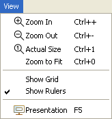
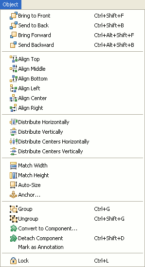
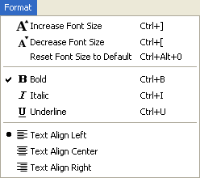

Some actions are also available from the main application menu. There is the View menu. It includes the following actions: Zoom, Show Rulers, Show Grid and Presentation.

The Object menu. It includes the following actions or action groups: Order, Alignment, Distribution, Size, Group / Ungroup, Detach Component, Mark as Annotation and Lock.

And the Format menu. It includes the following actions: Font Size (Increase / Decrease), Font Style and Text Alignment.

Some of the actions can also be found in File and Edit menus.
The menu can be customized to remove unwanted entries. This is especially important if you are using WireframeSketcher inside an IDE. To do this, right-click on the toolbar, choose Customize Perspective… and then uncheck all unwanted items in Menu Visibility section.
Next: Working with Projects